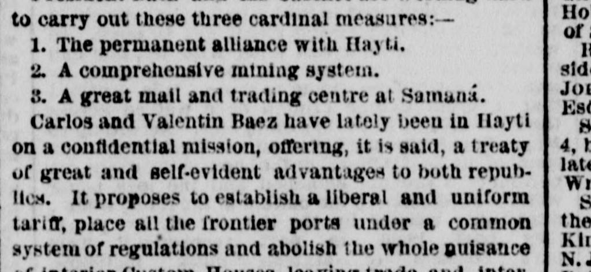
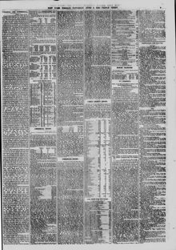

See the full pageVer la página completaIt proposes to establish a liberal and uniform tariff, place allPropone establecer un arancel liberal y uniforme, colocar a todos
Based on the provided excerpt, Carlos and Valentin Baez recently undertook a confidential mission to Hayti to propose a treaty establishing a liberal, uniform tariff, common frontier port regulations, and the abolition of interior custom houses to free border trade. Additionally, Dominican troops are moving to the "Hunda Frontera" to cooperate with Hayti's forces in suppressing border guerilla outbreaks that are frequently misreported by the foreign press as major revolutions. The Dominican republic is currently reported to be perfectly quiet, with its people tired of civil war and increasingly interested in foreign enterprises.A tenor del extracto de prensa, Carlos y Valentín Báez cumplieron recientemente una misión reservada en Haití para proponer un tratado que consagrase un arancel liberal y uniforme, reglamentaciones aduaneras fronterizas comunes y la supresión de las aduanas interiores para franquear el tráfico fronterizo. Asimismo, destacamentos dominicanos marchaban hacia la frontera profunda para cooperar con las fuerzas haitianas en la represión de correrías guerrilleras en la demarcación, a menudo presentadas falsamente por la prensa extranjera como grandes revoluciones. Se informaba que la República Dominicana gozaba de absoluta quietud, hallándose la población fatigada de contiendas intestinas y deseosa de promover iniciativas foráneas.
FULL TEXT:TRADUCCIÓN:
ST. DOMINGO.SANTO DOMINGO.
Carlos and Valentin Baez have lately been in Hayti on a confidential mission, offering, it is said, a treaty of great and self-evident advantages to both republics. It proposes to establish a liberal and uniform tariff, place all the frontier ports under a common system of regulations, and open a free and unreserved transit of merchandise from one to the other.Carlos y Valentín Báez han estado últimamente en Haití en una misión confidencial, ofreciendo, según se dice, un tratado de grandes y evidentes ventajas para ambas repúblicas. Propone establecer un arancel liberal y uniforme, colocar todos los puertos fronterizos bajo un sistema común de reglamentos, y abrir un tránsito libre y sin reservas de mercancías de uno a otro.
This would open a large and valuable trade across the frontier to both parties, and do away with the ruinous smuggling that has heretofore enriched a few border chiefs at the expense of both treasuries.Esto abriría un comercio grande y valioso a través de la frontera para ambas partes, y acabaría con el ruinoso contrabando que hasta ahora ha enriquecido a unos pocos jefes fronterizos a expensas de ambas haciendas.
The New York Herald. New York, June 6, 1868. Page 9.